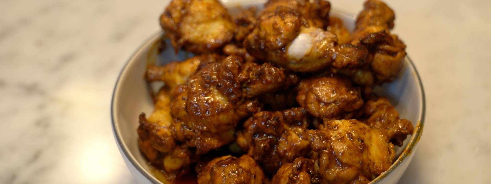

BAKED CHICKEN WINGS

CHANGE THIS DESCRIPTION
paragraph descibing the dish
Ingredients
- 2 pounds chicken wings, lollipopped
- 1 tablespoon garlic powder
- 1 tablespoon smoked paprika
- 1 teaspoon kosher salt
- 2 tablespoons canola oil
- A few knobs unsalted butter
- Freshly ground black pepper
- Hot sauce of choice
Steps
- Preheat the oven to 375˚F (190˚C).
- Pat chicken wings dry and add to a large bowl. Season the wings with garlic powder, smoked paprika and salt toss to combine.
- Place a large oven-proof saute pan over medium-high heat and pour in the oil, letting it heat for a moment. Add the seasoned wings and butter to the pan and let crisp for a moment before turning the wings to crisp up the other side. Add black pepper and toss to coat evenly. Once most of the edges are crispy, and the butter is frothing, place the pan in the oven and bake for about 15 minutes, until golden, crispy and cooked through to 165˚F (73˚F).
- Add wings to a large bowl, spoon on a few tablespoons of leftover pan sauce, a few splashes of hot sauce, a few knobs of butter, and toss, letting everything melt and form a glaze. Transfer to a clean dish to serve.